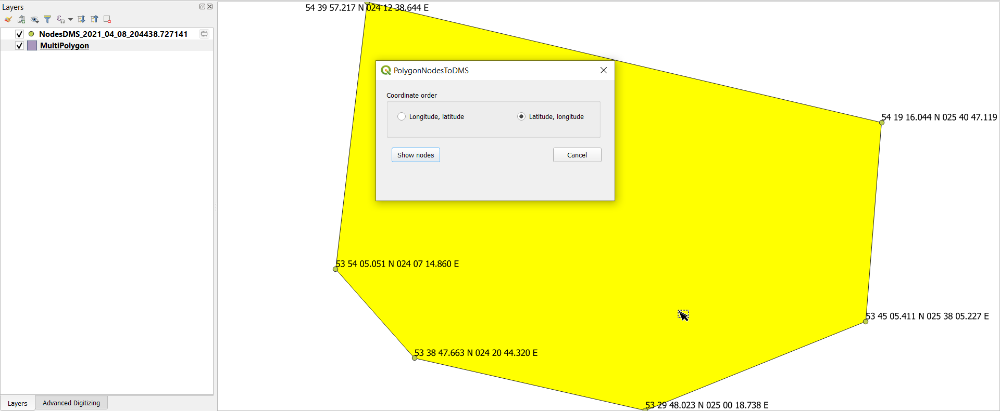

PolygonNodesToDMS
Extract polygon vertices and display their coordinates in DMSH format for aviation and airspace-related GIS workflows.
The problem
Polygon boundaries are commonly used to represent airspace, restricted areas and other geographic zones. In aviation documentation and charting, their vertices are often described using geographic coordinates in degrees, minutes and seconds (DMS).
QGIS stores coordinates not in DMS format, which are not always convenient to read or transfer directly into coordinate-based documentation. Identifying individual vertices and manually converting their coordinates into DMS format adds repetitive work and creates opportunities for transcription errors.
The solution
PolygonNodesToDMS displays the vertices of a selected polygon or multipolygon as formatted geographic coordinates directly in QGIS. Users can choose the coordinate order and generate a temporary memory layer containing the vertices and their DMSH (degrees, minutes, seconds, hemisphere) values.
This makes polygon boundary coordinates easier to inspect, read and reuse in aviation-related workflows without manually extracting and converting each vertex.
Value
Accessible vertex coordinates
Displays individual polygon vertices as readable geographic coordinates instead of requiring manual coordinate inspection.
Aviation-ready format
Converts vertex coordinates into DMSH notation, suitable for workflows that use degrees, minutes, seconds and hemisphere indicators.
Flexible coordinate order
Supports latitude–longitude and longitude–latitude output to match different documentation conventions.
Faster boundary verification
Generates a memory layer of formatted vertex coordinates, making polygon boundaries easier to inspect and review.
